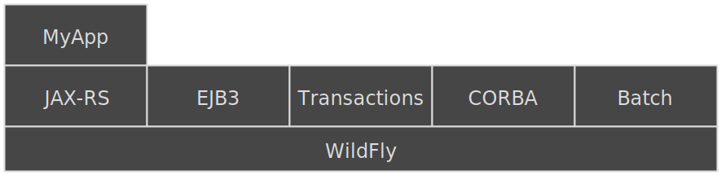
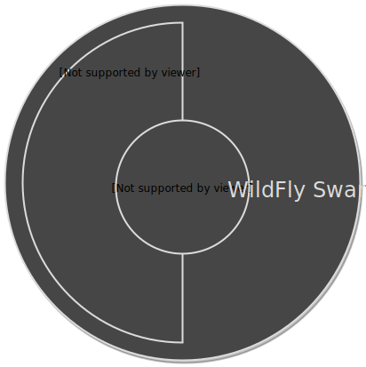

Rightsize Your Services with 
By:
James R. Perkins <jperkins@redhat.com>
What are Microservices anyway?
In short, the microservice architectural style is an approach to developing a single application as a suite of small services, each running in its own process and communicating with lightweight mechanisms, often an HTTP resource API. These services are built around business capabilities and independently deployable by fully automated deployment machinery. There is a bare minimum of centralized management of these services, which may be written in different programming languages and use different data storage technologies.- Martin Fowler, ThoughtWorks
Why Microservices?
- Allow you to take advantage of recent innovations:
- Linux Containers (Docker)
- Continuous Integration
- DevOps
- The cloud
- Allow updates to be deployed faster, as each service can be updated individually
What is WildFly Swarm?
- Open Source project sponsored by Red Hat
- Based on the WildFly Application Server
- Allows you to create microservices using standard Java EE API's on a mature runtime stack
- Allows you to pick the functionality that you require, and leave everything else
WildFly Swarm Core Concepts
- Packages everything into a "uberjar" application
- Includes just the bits of WildFly that your application requires
- Composed of many "Fractions" which map to specific server features
- You decide on the fractions you need, and only the required functionality will be bundled
- Provides additional features, such as Netflix open source components
Rightsize Your Services
- Use the API's you want
- Include the capabilities you need
- Wrap it up for deployment
Monolithic Architecture
WildFly Swarm Architecture
Installation
| WildFly | WildFly Swarm |
|---|---|
|
|
Configuration
| WildFly | WildFly Swarm |
|---|---|
|
|
DevOps
- WildFly Swarm has been designed to be dev ops friendly
- Simple installation
- Developers can choose which config options to support
- In general only config options relevant to the app will be exposed
- Single jar approach works well with Linux containers (Docker)
A word of caution
- Microservices are not a magic bullet
- You need to evaluate if they are right for your team
- Services may be simpler, but there is more complexity in how they interact and are managed
- Monolithic architecture is still a perfectly valid choice
Using WildFly Swarm
How do I convert a current Java EE project to use WildFly Swarm?
<plugin>
<groupId>org.wildfly.swarm</groupId>
<artifactId>wildfly-swarm-plugin</artifactId>
<version>1.0.0.Final</version>
<configuration>
<executions>
<execution>
<goals>
<goal>package</goal>
</goals>
</execution>
</executions>
</plugin>
That's it!
Build it
mvn package
Run it
mvn wildfly-swarm:run
- or -
java -jar target/myapp-swarm.jar
Demo
What did we do?
- Added the
org.wildfly.swarm:wildfly-swarm-pluginto our pom - Built the project, just as we would have before
- Ran the project instead of deploying the project
Convention over configuration
- Appropriate Fractions will be selected based on your applications dependencies
- Based around sensible defaults
- A default configuration will be provided
- All this can be customized
Fractions
- Fractions provide a specific piece of functionality
- May map directly do a WildFly subsystem (e.g. JAX-RS)
- Or bring in something else entirely (e.g. Keycloak, Ribbon)
- Fractions can provide deployments
- Topology deployment gives access to the topology
- Fractions can alter user deployments
- Keycloak fraction can be used to secure a deployment
- Fractions can be auto detected by the Swarm plugin based on the contents of your project, or can be explicitly enabled and configured
Explicitly defining fractions
<dependency>
<groupId>org.wildfly.swarm</groupId>
<artifactId>datasources</artifactId>
</dependency>
Force fraction detection
<fractionDetectMode>force</fractionDetectMode>
The main() method
- The
main()method is the entry point to a Swarm app - If it is not provided Swarm uses a default
main()method - Can be used to configure the container and the deployment
Take control with the main() method
public static void main(final String[] args) throws Exception {
final Container container = new Container();
final JAXRSArchive deployment = ShrinkWrap.create(JAXRSArchive.class, "myapp.war");
deployment.addClass(MyResource.class);
deployment.addClass(NotFoundExceptionMapper.class);
deployment.addAllDependencies();
container.start().deploy(deployment);
}
<configuration>
<mainClass>org.wildfly.swarm.examples.jaxrs.shrinkwrap.Main</mainClass>
</configuration>
Container Configuration
There are two options for configuring the container:
- Using the Java API
- Using XML
Configuration using the Java API
final Container container = new Container()
.fraction(new DatasourcesFraction()
.jdbcDriver("h2", (d) -> {
d.driverClassName("org.h2.Driver");
d.xaDatasourceClass("org.h2.jdbcx.JdbcDataSource");
d.driverModuleName("com.h2database.h2");
})
.dataSource("ExampleDS", (ds) -> {
ds.driverName("h2");
ds.connectionUrl("jdbc:h2:mem:test;DB_CLOSE_DELAY=-1");
ds.userName("sa");
ds.password("sa");
})
);
Configuration using the XML
final ClassLoader cl = Main.class.getClassLoader();
final URL xmlConfig = cl.getResource("standalone.xml");
final Container container = new Container()
.withXmlConfig(xmlConfig);
Demo
Questions?
Keep in Touch
- GitHub https://github.com/wildfly-swarm
- Twitter @wildflyswarm
- IRC #wildfly-swarm
- Website http://wildfly-swarm.io/
- User Guide http://wildfly-swarm.gitbooks.io/wildfly-swarm-users-guide/content/
- Issues: https://issues.jboss.org/projects/SWARM